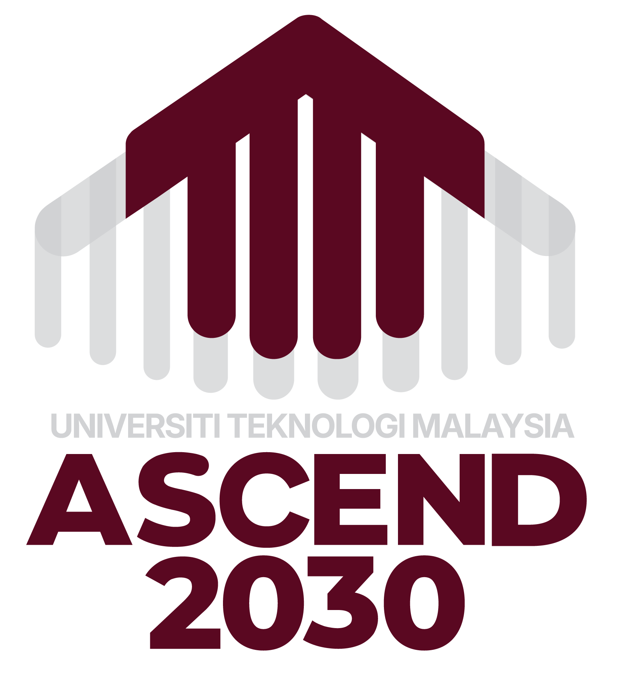

MECS2313 Perlu pengesahan
Advanced Computer System & Architecture
Master of Computer Science · Pascasiswazah
11/15
Perhatian
Matrix rasmi VBE/ESD dan tandatangan masih diperlukan.

RepositoryHab kerja sehenti untuk menyemak dan memurnikan CI berasaskan Value Based Education (VBE) dan Education for Sustainable Development (ESD).
Jejaki dokumen asal, versi kemas kini dan dapatan semakan bagi setiap kursus.
Master of Computer Science · Pascasiswazah
Perhatian
Matrix rasmi VBE/ESD dan tandatangan masih diperlukan.
Master of Computer Science · Pascasiswazah
Pemetaan disahkan
CLO3 · Integrity & CLO1 · Systems Thinking.
BSc Computer Science (Networks & Security) · Prasiswazah
Menunggu pemurnian
Dokumen asal tersedia; keputusan VBE/ESD belum dibuat.
Tiada kursus yang sepadan dengan carian ini.
Pilih kursus untuk membaca sinopsis, pemetaan CLO dan maklumat penting tanpa memuat turun fail terlebih dahulu.
MECS2313 / MCSS2313 · Master of Computer Science
Kursus ini mengkaji prinsip lanjutan dalam reka bentuk kuantitatif dan analisis seni bina komputer moden. Kandungannya merangkumi instruction-level dan data-level parallelism, hierarki memori, sistem multipemproses, GPU, warehouse-scale computing serta pemecut khusus domain. Pembelajaran dilaksanakan melalui kuliah, perbincangan aktif dan projek penyiasatan teknikal berkumpulan.
Differentiate the organizational paradigms that determine the capabilities and performance of computer systems.
C4 · PLO1Analyze the interactions between the computer's architecture and its software.
C4 · PLO2Evaluate advanced design features on modern processors, and justify their impact on system performance.
C5 · PLO2Design and analyze a simple high-performance computer architecture.
C6 · PLO2MECS2323 · Master of Computer Science
Kursus pascasiswazah ini memberi kajian mendalam tentang rangkaian komputer moden dan teknologi pengkomputeran awan. Topik merangkumi IPv6, SDN, rangkaian pusat data, 4G/5G, seni bina awan, virtualisasi dan pengurusan sumber. Pendekatan systems thinking digunakan untuk menilai teknologi sebagai komponen yang saling berkait dalam infrastruktur digital.
Analyse state-of-the-art computer networking technologies as interconnected systems to address advanced networking challenges.
C4 · PLO1 · ESD: STEvaluate the demands of cloud computing across diverse application domains.
C5 · PLO3Justify network and cloud computing solutions using quantitative data while collaborating with integrity.
C5 · PLO7 · VBE: IntegrityExamine and communicate critical issues in advanced computer networking technologies.
C4 · PLO5SCSC2023 · BSc Computer Science (Computer Networks & Security)
Kursus ini memperkenalkan prinsip seni bina komputer dan pengaturcaraan bahasa himpunan dengan menghubungkan sistem perkakasan dan perisian. Topik merangkumi CPU, instruction set architecture, floating-point, penilaian prestasi dan pengaturcaraan x86 32-bit. Kuliah, makmal dan pembelajaran berasaskan projek membina pengalaman praktikal dalam menulis, menganalisis dan menyahpepijat program aras rendah.
Analyze fundamental principles of computer architecture design using systems thinking.
C4 · PLO1Evaluate fundamental principles of assembly language programming using strategic thinking.
C5 · PLO2Practice using simulation tools to design components and debug assembly language programs.
P3 · PLO3Demonstrate an assembly language program addressing practical problems through collaboration.
A4 · PLO4Ikuti aliran ini dari matriks kursus hingga semakan akhir. Setiap langkah membina asas untuk langkah seterusnya.
Baca panduan penuh →Pastikan program, kohort dan kod kursus tepat.
Sahkan PLO dan Graduate Attributes pada CI.
Nyatakan nilai yang dipetakan secara jelas dalam CLO.
UG minimum C3/C4, PG minimum C4/C5.
Padankan LO, tugasan, ujian dan rubrik.
Susun empat komponen penulisan yang konsisten.
Lengkapkan semua 15 item sebelum pemuktamadan.
Tandakan item untuk menjejak kemajuan pada peranti ini. Data tidak dihantar ke mana-mana.
Akses templat, panduan dan bahan pemetaan tanpa mencari di seluruh repositori.